Aplicación web para reunir contexto operativo, modelado BPM y análisis causa-raíz en un recorrido trazable.
SPA HTML/CSS/JavaScriptFlaskPostgreSQLDefensa del TFM · 2026
UC_BIB_
Solve
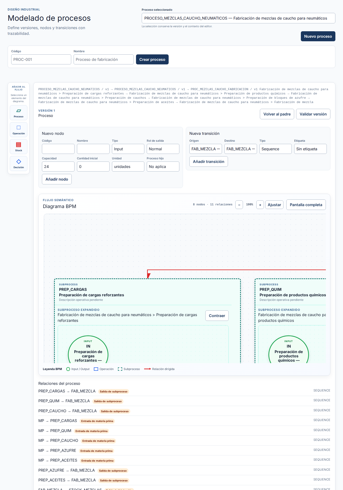
01 · Problema & objetivo
Del dato operativo a una explicación causal
Reunir procesos, operaciones, máquinas, contratos y árboles causales en un mismo espacio consultable.
- Contexto operativo visible.
- Recorrido reproducible mediante UI, APIs y persistencia.
- Alcance generalista, con integración conceptual aún pendiente entre causalidad y process modeling.
Nota: Presentar una base funcional y demostrable, separando evidencia disponible de validación final.
02 · Solución
Una SPA que hace visible el contexto
Vistas navegables por hash que consumen APIs Flask para consultar y modificar el dominio.
- Frontend estático: vistas, router, estado y componentes.
- Flask: blueprints HTTP y servicio de la SPA.
- Servicios, casos de uso y repositorios.
- PostgreSQL: persistencia operativa, causal y BPM.
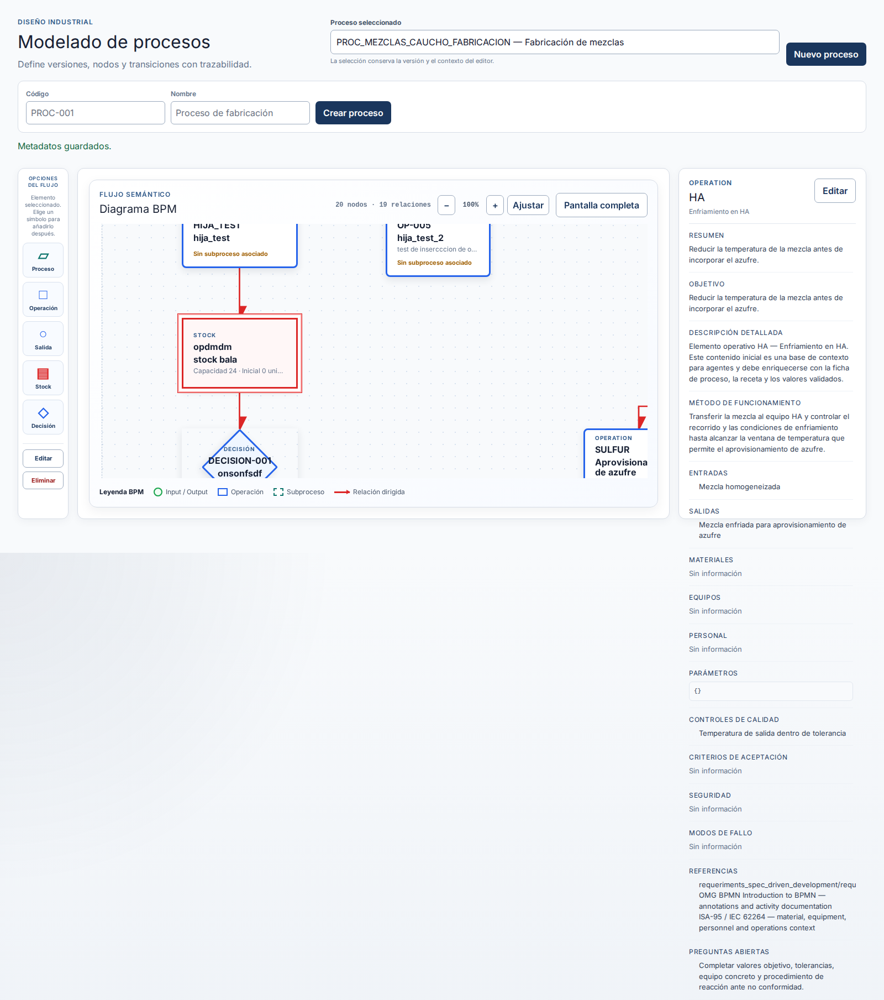
Nota: La selección de un elemento del grafo permite consultar su contexto industrial.
03 · Arquitectura & persistencia
Separación clara de responsabilidades
HTML/CSS/JavaScript
↓ router + clientes API
Flask / blueprints HTTP
↓ servicios y casos de uso
Repositorios
↓
PostgreSQL
Decisión: el grafo de cada proceso es mutable; no se presenta histórico de versiones porque no está confirmado en el README.
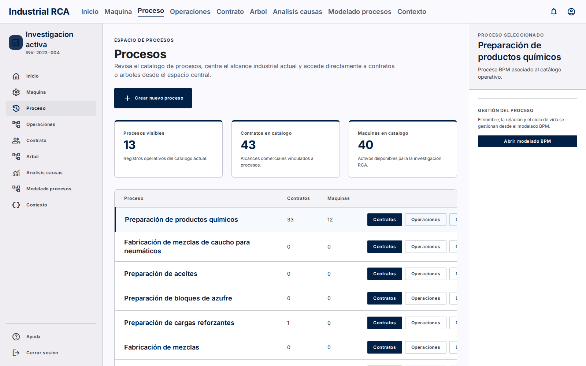
Nota: Dash queda retirado del arranque actual; la aplicación ejecutable es la SPA servida por Flask.
04 · BPM
Modelar antes de analizar
El editor representa entradas, salidas, operaciones, subprocesos, decisiones y stock, además de transiciones dirigidas.
Lectura: una decisión separa las salidas MEZCLA_OK y MEZCLA_NOK mediante ramas “Sí” y “No”.
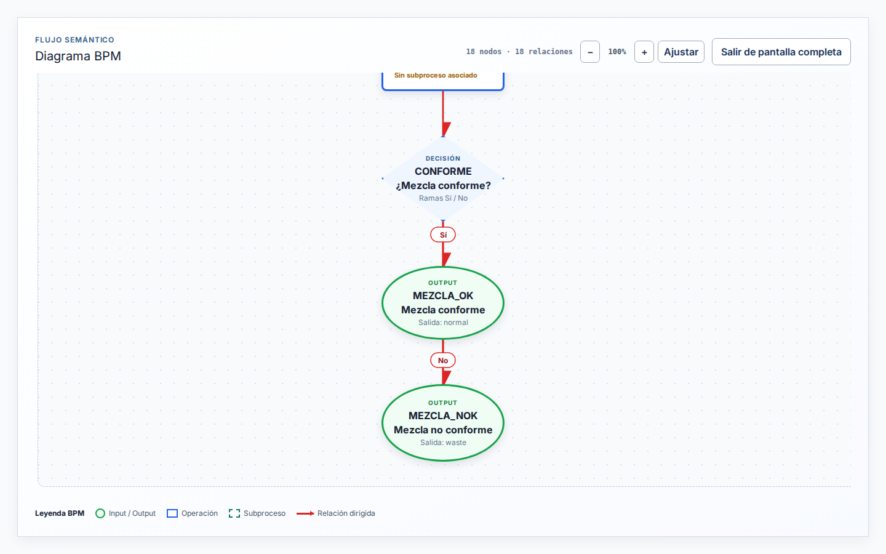
Nota: El proceso expresa alternativas y condiciones visibles; no es solo una lista de operaciones.
05 · Jerarquía & contexto
Subprocesos sin perder el hilo
- Expansión inline dentro del lienzo.
- Breadcrumb para conservar el contexto.
- Contraer y relayout para volver a la vista general.
- Panel de metadatos al seleccionar un nodo.
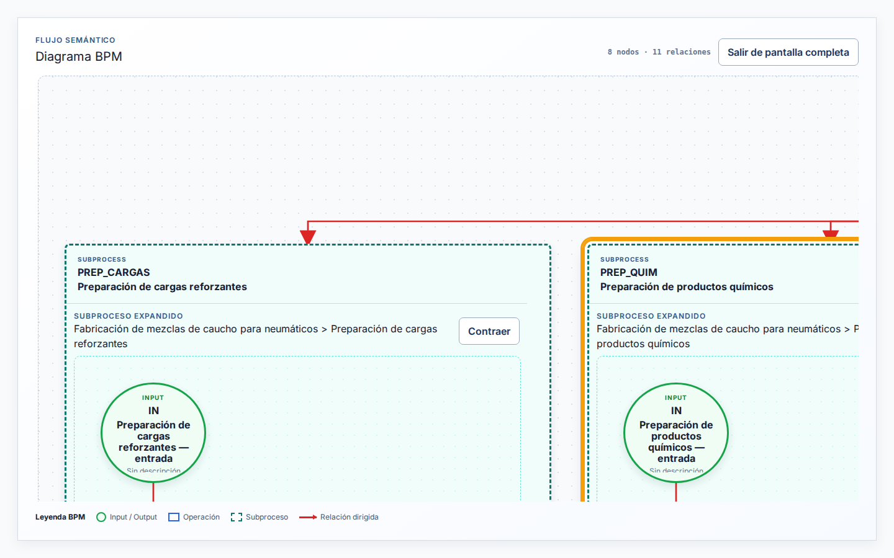
Nota: Destacar la navegación jerárquica y la relación entre vista global y detalle.
06 · Demo real
Seis fases, un proceso demo
| Fase | Resultado documentado |
|---|---|
| 1 | Proceso BPM creado desde la UI. |
| 2 | OP-001, OP-002 y OP-003 creadas mediante API Playwright porque el proceso vacío exige un nodo padre. |
| 3 | Máquina 352 creada con contrato 216; asociaciones bloqueadas por HTTP 409. |
| 4 | Contrato RCA 216 creado con KPI, objetivo y estado review. |
| 5 | Causa raíz e hipótesis creadas para template RCA. |
| 6 | Análisis 26 importado desde plantilla y cerrado. |
Proceso: TFM_DEMO_1788104782421_PROC · 4cda3697-8024-41ce-aaeb-a0988eff073a
Nota: La fase 3 es incompleta: ninguna asociación máquina–operación debe presentarse como persistida.
07 · Evidencia
Seis pantallas, un mismo recorrido
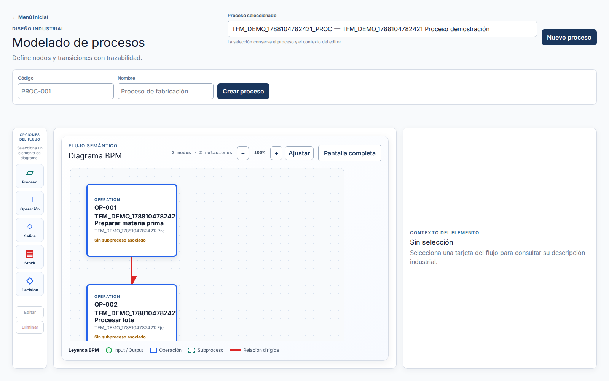
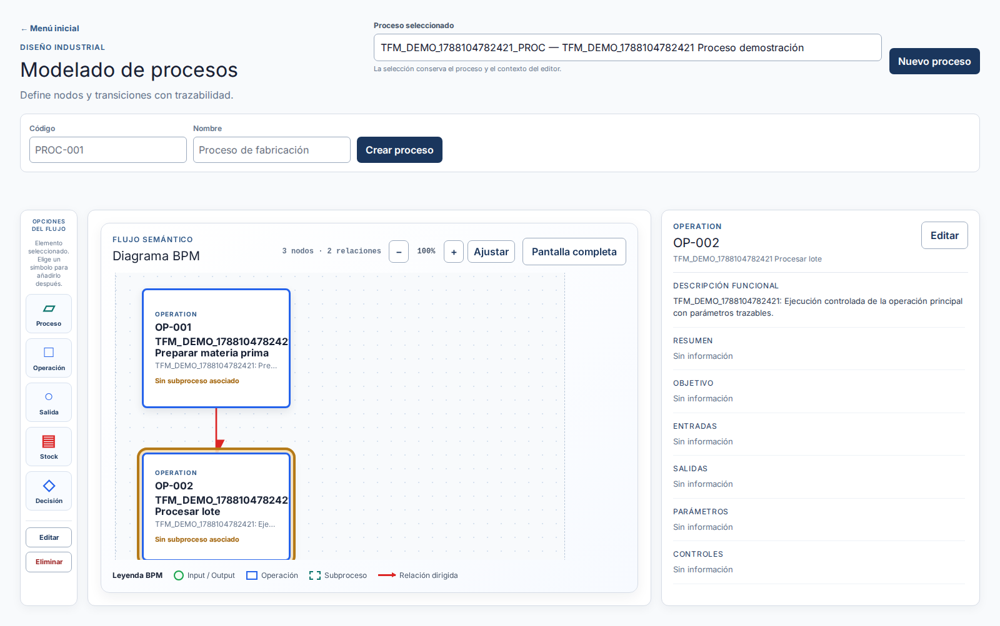
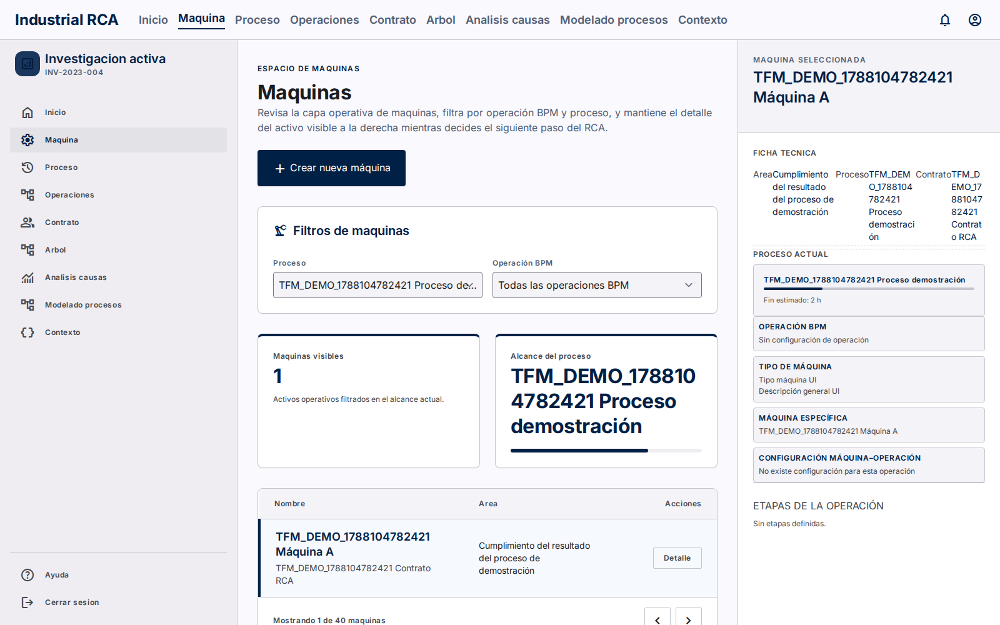
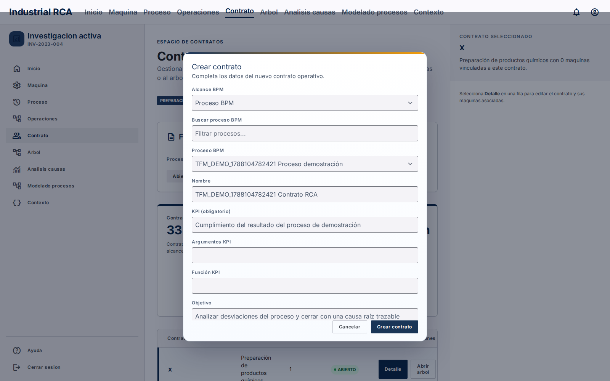
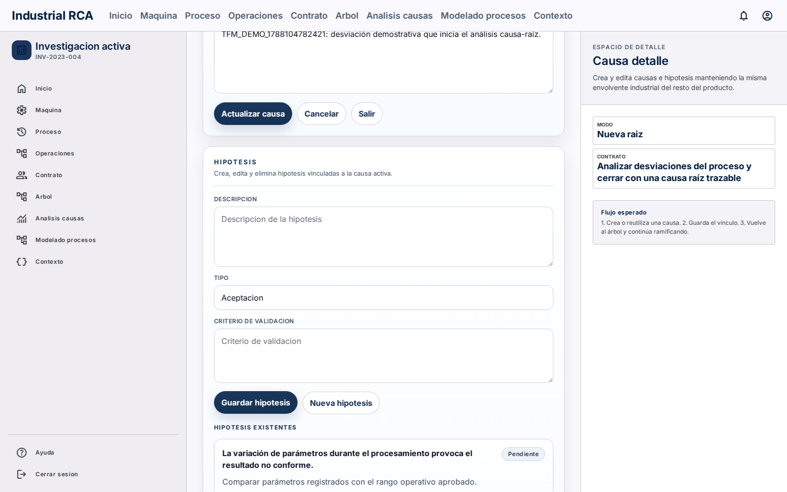
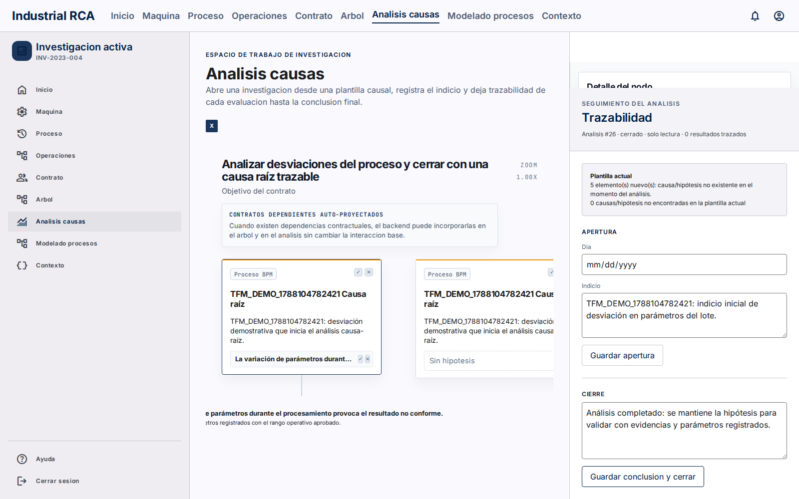
Nota: Recorrer de izquierda a derecha. La captura 03 es evidencia negativa: muestra “Sin configuración de operación”.
08 · RCA
Del modelo a la explicación
contrato 216 → causa raíz → hipótesis 255 → análisis 26
El análisis se cerró con indicio y conclusión registrados en la evidencia conservada.
Nota: Explicar la trazabilidad con identificadores reales, sin extrapolar resultados.
09 · Validación
Qué está demostrado
- Capturas Playwright contra Flask y PostgreSQL local.
- Verificaciones documentadas sobre nodos, transiciones, expansión y ramas.
- Entidades demo comprobadas: proceso, operaciones, contrato, máquina, causas, hipótesis y análisis.
- Rutas reproducibles en la SPA.
Estado: la validación humana final / Gate 3 sigue pendiente. Las pruebas técnicas no equivalen al cierre del requerimiento.
Nota: Diferenciar evidencia automatizada de validación humana.
10 · Limitaciones
Decirlo con precisión
- Las 3 asociaciones máquina–operación devolvieron HTTP 409 persistence_error.
- Las asociaciones no se insertaron directamente ni se fabricó evidencia.
- El proceso vacío exigía nodo padre en la UI; las operaciones se crearon mediante API Playwright.
- La integración causal–BPM y el entorno final de PostgreSQL deben confirmarse.
Nota: Convertir el bloqueo en una conclusión honesta del trabajo de integración.
11 · Cierre
Una base defendible,
con límites visibles
- SPA trazable para contexto operativo, BPM y RCA.
- Editor BPM con nodos, relaciones, decisiones y subprocesos.
- Flujo demo de seis fases con evidencia real.
- Asociación máquina–operación pendiente por
409. - Validación humana final pendiente antes del cierre.
Nota: Cerrar separando capacidad implementada, evidencia disponible y trabajo pendiente.